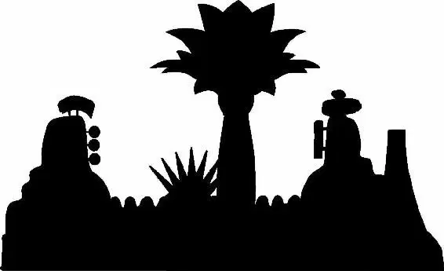

Judy and Nick were led inside the house and into a lavishly decorated office. A large polar bear entered the room.
“Is that Mr. Big?” Judy whispered to Nick.
“No,” he answered.
An even bigger polar bear lumbered in behind. “What about him? Is that him?” Judy asked. “No,” said Nick, frustrated. An even bigger polar bear showed up, following the others. “Okay, that’s gotta be him,” Judy said.
“Stop talking, stop talking, stop talking—”
The largest polar bear held a teeny tiny chair in his giant paw. Sitting on the chair was a little Arctic shrew.
“Mr. Big, sir, this is a simple misunder—” Nick started.
Judy stared at the tiny shrew in wide-eyed surprise. He was Mr. Big?
Mr. Big held out his tiny finger, and Nick kissed the ring wrapped around it.
“This is a simple misunderstanding,” said Nick.
Mr. Big motioned for Nick to be quiet. “You come here unannounced...on the day my daughter is to be married?” Mr. Big’s raspy voice had an authoritative tone to it, but it also sounded like his body: very tiny.
“Well, actually, we were brought here against our will, so...Point is, I did not know it was your car, and I certainly did not know about your daughter’s wedding,” Nick said, chuckling nervously.
“I trusted you, Nicky. I welcomed you into my home. We broke bread together. Gram-mama made you her cannoli.” Mr. Big frowned and scratched his chin as he looked at Nick with cold eyes. “And how did you repay my generosity? With a rug...made from the butt of a skunk. A skunk-butt rug. You disrespected me. You disrespected my gram-mama, who I buried in that skunk-butt rug. I told you never to show your face here again, but here you are, snooping around with this...” Mr. Big gestured to Judy. “What are you, a performer? What’s with the costume?”
Judy tried to answer. “Sir, I am a co—”
“Mime!” Nick shouted, cutting her off. “She is a mime. This mime cannot speak. You can’t speak if you’re a mime.”
“No,” said Judy. “I am a cop.”
Mr. Big shifted in his tiny chair, agitated.
“And I’m on the Emmitt Otterton case. My evidence puts him in your car, so intimidate me all you want; I’m going to find out what you did to that otter if it’s the last thing I do.”
Mr. Big considered Judy and grunted. “Then I have only one request: say hello to Gram-mama. Ice ’em!” he shouted to the polar bears.
“Whoa! I didn’t see nothing! I’m not saying nothing!” Nick said, trying to squirm his way out of death by ice.
“And you never will,” said Mr. Big coolly.
The polar bears picked Judy and Nick up, ready to throw them down into a freezing pit of ice and water the bears had opened in front of Mr. Big’s desk.
“Please!” Nick begged. “No, no, no! If you’re mad at me about the rug, I’ve got more rugs!”
The polar bears held Nick and Judy over the pit. Then Mr. Big’s daughter, Fru Fru, who was as tiny as her father, entered, wearing a wedding gown.
“Oh, Daddy, it’s time for our dance,” she said. She noticed Judy and Nick and sighed, clearly annoyed.
“What did we say? No icing anyone at my wedding.”
“I have to, baby,” said Mr. Big. “Daddy has to.” Then he turned to Nick and Judy and calmly said, “Ice ’em.”
Nick and Judy screamed.
“Wait. WAIT!” Fru Fru shouted. “I know her. She’s the bunny who saved my life yesterday. From that giant donut.”
It was the stylish shrew from Little Rodentia.
“This bunny?” asked Mr. Big.
“Yes!” She turned to Judy. “Hi,” she said sweetly.
“Hi,” said Judy. “I love your dress.”
“Aw, thank you,” said Fru Fru.
Mr. Big motioned to the polar bears. “Put ’em down.” Then he turned to Judy. “You have done me a great service. I will help you find the otter. I will take your kindness...and pay it forward.”
Nick stood there, dumbfounded...and extremely happy not to be in a pit of ice.
